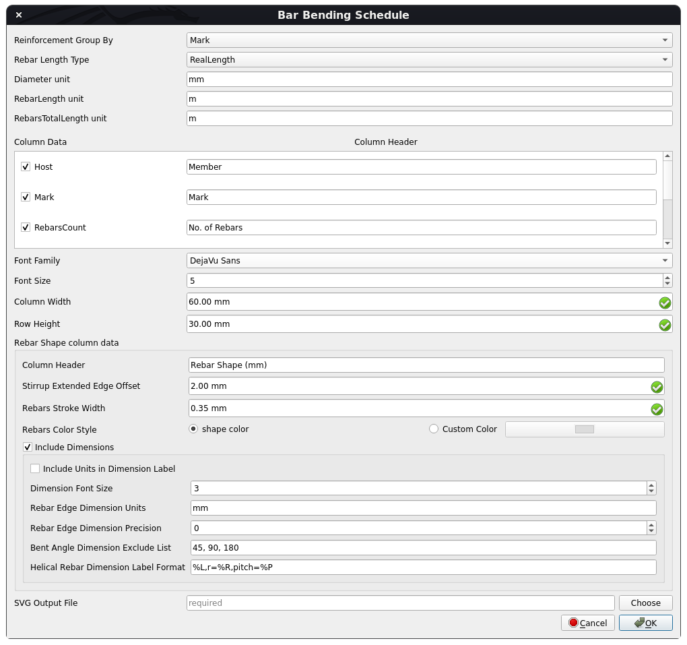

Reinforcement BarBendingSchedule/fr
|
Reinforcement Plan de cintrage |
| Emplacement du menu |
|---|
| Aucun |
| Ateliers |
| Reinforcement |
| Raccourci par défaut |
| Aucun |
| Introduit dans la version |
| 0.19 |
| Voir aussi |
| Aucun |
Description
L'outil Plan de cintrage permet à l'utilisateur de créer la nomenclature de pliage des barres d'armature.
Cet outil fait partie de l'atelier Reinforcement, un atelier externe qui peut être installé avec le  gestionnaire des extensions.
gestionnaire des extensions.
{kind=link}
Plan de cintrage des armatures
Utilisation
1. Sélectionnez les objets  Arch Armatures et Rebar2 que vous souhaitez inclure dans la nomenclature de façonnage des armatures ou sélectionnez les objets
Arch Armatures et Rebar2 que vous souhaitez inclure dans la nomenclature de façonnage des armatures ou sélectionnez les objets  Arch_Structure à inclure aux
Arch_Structure à inclure aux  Arch Armatures et les objets Rebar2 hébergés par celui-ci dans le Plan de cintrage. Si rien n'est sélectionné, le Plan de cintrage sera généré pour tous les objets
Arch Armatures et les objets Rebar2 hébergés par celui-ci dans le Plan de cintrage. Si rien n'est sélectionné, le Plan de cintrage sera généré pour tous les objets  Arch Armatures et Rebar2 présents dans le modèle.
Arch Armatures et Rebar2 présents dans le modèle.
2. Sélectionnez ensuite  Bar Bending Schedule dans les outils d'armature.
Bar Bending Schedule dans les outils d'armature.
3. Une boîte de dialogue apparaîtra à l'écran, comme indiqué ci-dessous.

Boîte de dialogue de l'outil Reinforcement Bar Bending Schedule
{kind=link}
4. Modifiez les données en fonction de vos besoins.
7. Cliquez sur OK ou Apply pour générer un plan de cintrage.
6. Cliquez sur Annuler pour quitter la fenêtre de dialogue.
Propriétés
Général :
- DonnéesReinforcement Group By : spécifie comment les objets armatures doivent être regroupés dans le Tableau des armatures, c'est-à-dire "Host" ou "Mark".
- DonnéesRebar Length Type : type de longueur d'armature spécifie le type de longueur d'armature utilisé pour les calculs de nomenclature, c'est-à-dire "RealLength" ou "LengthWithSharpEdges".
- DonnéesColumn Headers : dictionnaire avec column_data comme clé et tuple (column_display_header, column_sequence) comme valeur.
- DonnéesColumn Units : dictionnaire avec les clés: "Diameter", "RebarLength", "RebarsTotalLength" et leurs unités correspondantes comme valeur.
- DonnéesFont Family : famille de polices de texte dans Bar Bending Schedule SVG.
- DonnéesFont Size : taille de la police en mm.
- DonnéesColumn Width : largeur de chaque colonne dans Bar Bending Schedule SVG.
- DonnéesRow Height : hauteur de chaque ligne dans Bar Bending Schedule SVG.
- DonnéesSVG Output File : fichier de sortie pour écrire la Nomenclature de façonnage des armatures SVG.
Rebar Shape column data : données relatives à la colonne forme d'armature dans le plan de cintrage
- DonnéesColumn Header : en-tête de colonne de la colonne de forme d'armature.
- DonnéesStirrup Extended Edge Offset : décalage des bords d'extrémité étendus de l'étrier, de sorte que les bords d'extrémité de l'étrier avec un angle plié à 90 degrés ne se chevauchent pas avec les bords de l'étrier.
- DonnéesRebars Stroke Width : largeur de trait des armatures dans la colonne de forme d'armature.
- DonnéesRebars Color Style : style de couleur des armatures.
Rebar Shape Column Dimension Data : données relatives aux dimensions de forme d'armature dans la colonne Rebar Shape
- DonnéesInclude Dimensions : si True, les dimensions de chaque bord d'armature et les dimensions d'angle plié seront incluses dans le Tableau des armatures.
- DonnéesInclude Units in Dimension Label : si la valeur est True, les unités de longueur de bord d'armature seront affichées dans l'étiquette de dimension.
- DonnéesRebar Edge Dimension Units : unités à utiliser pour les dimensions de longueur de bord d'armature.
- DonnéesRebar Edge Dimension Precision : nombre de décimales à afficher pour la longueur du bord de l'armature sous forme d'étiquette de cote.
- DonnéesDimension Font Family : famille de polices du texte de dimension.
- DonnéesDimension Police Size : taille de la police du texte de dimension.
- DonnéesBent Angle Dimension Exclude List : liste des angles pliés pour ne pas inclure leurs dimensions.
- DonnéesHelical Rebar Dimension Label Format : format de l'étiquette de dimension d'armature hélicoïdale. Par exemple. "%L,r=%R,pitch=%P" où% L -> Longueur de l'armature hélicoïdale, % R -> Rayon d'hélice de l'armature hélicoïde
Script
Voir aussi : Arch API, Reinforcement API et FreeCAD Débuter avec les scripts.
L'outil Plan de cintrage peut être utilisé dans des macros et à partir de la console Python à l'aide des fonctions suivantes :
Créer un Tableau d'armatures
getBarBendingSchedule(
rebar_objects: Optional[List] = None,
column_headers: Optional[Dict[str, Tuple[str, int]]] = None,
column_units: Optional[Dict[str, str]] = None,
dia_weight_map: Optional[Dict[float, FreeCAD.Units.Quantity]] = None,
rebar_length_type: Optional[
Literal["RealLength", "LengthWithSharpEdges"]
] = None,
reinforcement_group_by: Optional[Literal["Mark", "Host"]] = None,
font_family: Optional[str] = None,
font_size: float = 5,
column_width: float = 60,
row_height: float = 30,
rebar_shape_column_header: str = "Rebar Shape (mm)",
rebar_shape_view_directions: Union[
Union[FreeCAD.Vector, WorkingPlane.Plane],
List[Union[FreeCAD.Vector, WorkingPlane.Plane]],
] = FreeCAD.Vector(0, 0, 0),
rebar_shape_stirrup_extended_edge_offset: float = 2,
rebar_shape_color_style: str = "shape color",
rebar_shape_stroke_width: float = 0.35,
rebar_shape_include_dimensions: bool = True,
rebar_shape_dimension_font_size: float = 3,
rebar_shape_edge_dimension_units: str = "mm",
rebar_shape_edge_dimension_precision: int = 0,
include_edge_dimension_units_in_dimension_label: bool = False,
rebar_shape_bent_angle_dimension_exclude_list: Union[
List[float], Tuple[float, ...]
] = (45, 90, 180),
helical_rebar_dimension_label_format: str = "%L,r=%R,pitch=%P",
output_file: Optional[str] = None,
) -> xml.ElementTree.Element
- Génère et renvoie un élément SVG du Tableau des armatures pour un
rebar_objects. rebar_objectsest une liste d'objets <ArchRebar._Rebar> ou <rebar2.BaseRebar>, pour générer le tableau. S'il n'est pas fourni, tous les objets ArchRebars et rebar2.BaseRebar avec une marque unique d'ActiveDocument seront sélectionnés.column_headersest un dictionnaire avec les clés: "Host", "Mark", "RebarsCount", "Diameter", "RebarLength", "RebarsTotalLength" et les valeurs sont un tuple de column_header et leur numéro de séquence.
Exemple : {
"Host": ("Member", 1),
"Mark": ("Mark", 2),
"RebarsCount": ("No. of Rebars", 3),
"Diameter": ("Diameter in mm", 4),
"RebarLength": ("Length in m/piece", 5),
"RebarsTotalLength": ("Total Length in m", 6),
}
mettez le numéro de séquence de la colonne sur 0 pour masquer la colonne.
column_unitsest un dictionnaire avec les clés: "Diameter", "RebarLength", "RebarsTotalLength" et leurs unités correspondantes comme valeur.
Exemple: {
"Diameter": "mm",
"RebarLength": "m",
"RebarsTotalLength": "m",
}
dia_weight_mapest un dictionnaire avec le diamètre comme clé et le poids correspondant comme valeur.
Syntaxe: {
6: FreeCAD.Units.Quantity("0.222 kg/m"),
8: FreeCAD.Units.Quantity("0.395 kg/m"),
10: FreeCAD.Units.Quantity("0.617 kg/m"),
12: FreeCAD.Units.Quantity("0.888 kg/m"),
...,
}
rebar_length_typespécifie le type de longueur d'armature utilisé pour les calculs; il peut s'agir de "RealLength" ou "LengthWithSharpEdges".reinforcement_group_byspécifie comment les objets armatures doivent être groupés; il peut s'agir de "Mark" ou "Host".font_familyspécifie la famille de polices du texte de données.font_sizespécifie la taille de la police du texte des données.column_widthspécifie la largeur de chaque colonne dans le tableau des barres SVG.row_heightspécifie la hauteur de chaque ligne dans le tableau des barres SVG.rebar_shape_column_headerspécifie l'en-tête de colonne pour la colonne de forme d'armature.rebar_shape_view_directionsest une liste de directions de point de vue pour chaque forme d'armature. Il peut être de typeFreeCAD.VectorouWorkingPlane.PlaneOU leur liste. Gardez-leFreeCAD.Vector(0, 0, 0)pour choisir automatiquement view_directions.rebar_shape_stirrup_extended_edge_offsetspécifie le décalage des bords d'extrémité étendus de l'étrier, de sorte que les bords d'extrémité de l'étrier avec un angle plié à 90 degrés ne se chevauchent pas avec les bords de l'étrier.rebar_shape_color_stylespécifie le style de couleur des armatures. Il peut s'agir de "shape color" ou "color_name or hex_value_of_color". "shape color" signifie sélectionner la couleur de la forme de l'armature.rebar_shape_stroke_widthspécifie la largeur de trait des armatures en forme d'armature SVG.rebar_shape_include_dimensionsspécifie si les dimensions de chaque arête d'armature et les cotes d'angle plié doivent être incluses dans la forme d'armature SVG.rebar_shape_dimension_font_sizespécifie la taille de police du texte de cote en forme d'armature SVG.rebar_shape_edge_dimension_unitsspécifie les unités à utiliser pour les dimensions de longueur d'arête d'armature en forme d'armature SVG.rebar_shape_edge_dimension_precisionspécifie le nombre de décimales à afficher pour la longueur de l'armature en tant qu'étiquette de cote dans la forme d'armature SVG. Définissez-le sur Aucun pour utiliser la précision d'unité préférée de l'utilisateur dans les préférences d'unité de FreeCAD.include_edge_dimension_units_in_dimension_labelspécifie si les unités de longueur d'arête des armatures doivent être affichées dans l'étiquette de cote en forme d'armature SVG.rebar_shape_bent_angle_dimension_exclude_listspécifie la liste des angles pliés pour ne pas inclure leurs dimensions dans la forme d'armature SVG.helical_rebar_dimension_label_formatspécifie le format de l'étiquette de cote d'armature hélicoïdale en forme d'armature SVG. Par exemple. "%L,r=%R,pitch=%P" où:
% L -> Longueur de l'armature hélicoïdale % R -> rayon d'hélice de l'armature hélicoïdale % P -> Pas d'hélice de l'armature hélicoïdale
output_filespécifie le fichier de sortie pour écrire le programme de pliage de barres généré SVG.
Exemple
from pathlib import Path
import FreeCAD, Draft, Arch
from ColumnReinforcement import SingleTie
from BarBendingSchedule import BBSfunc
Rect1 = Draft.makeRectangle(400, 400)
Structure1 = Arch.makeStructure(Rect1, height=1600)
Structure1.ViewObject.Transparency = 80
Rect2 = Draft.makeRectangle(500, 500)
Structure2 = Arch.makeStructure(Rect2, height=1600)
Structure2.ViewObject.Transparency = 80
Structure2.Placement = FreeCAD.Placement(FreeCAD.Vector(1000, 0, 0), FreeCAD.Rotation(FreeCAD.Vector(0, 0, 1), 0))
FreeCAD.ActiveDocument.recompute()
# Create Straight Rebars
rebar_group = SingleTie.makeSingleTieFourRebars(
l_cover_of_tie=40,
r_cover_of_tie=40,
t_cover_of_tie=40,
b_cover_of_tie=40,
offset_of_tie=100,
bent_angle=135,
extension_factor=8,
dia_of_tie=8,
number_spacing_check=True,
number_spacing_value=10,
dia_of_rebars=16,
t_offset_of_rebars=40,
b_offset_of_rebars=40,
rebar_type="StraightRebar",
hook_orientation="Top Inside",
hook_extend_along="x-axis",
l_rebar_rounding=None,
hook_extension=None,
structure=Structure1,
facename="Face6",
).rebar_group
# Assign Mark to straight rebars
for straight_rebar in rebar_group.RebarGroups[1].MainRebars:
straight_rebar.Mark = "main_sb"
# Create LShaped Rebars with hook along x-axis
rebar_group = SingleTie.makeSingleTieFourRebars(
l_cover_of_tie=40,
r_cover_of_tie=40,
t_cover_of_tie=40,
b_cover_of_tie=40,
offset_of_tie=100,
bent_angle=90,
extension_factor=8,
dia_of_tie=8,
number_spacing_check=True,
number_spacing_value=10,
dia_of_rebars=16,
t_offset_of_rebars=-40,
b_offset_of_rebars=-40,
rebar_type="LShapeRebar",
hook_orientation="Top Outside",
hook_extend_along="x-axis",
l_rebar_rounding=2,
hook_extension=100,
structure=Structure2,
facename="Face6",
).rebar_group
# Assign Mark to lshape rebars
for lshape_rebar in rebar_group.RebarGroups[1].MainRebars:
lshape_rebar.Mark = "main_lb"
FreeCAD.ActiveDocument.recompute()
COLUMN_UNITS = {
"Diameter": "mm",
"RebarLength": "m",
"RebarsTotalLength": "m",
}
COLUMN_HEADERS = {
"Host": ("Member", 1),
"Mark": ("Mark", 2),
"RebarsCount": ("No. of Rebars", 3),
"Diameter": ("Diameter in " + COLUMN_UNITS["Diameter"], 4),
"RebarLength": ("Length in " + COLUMN_UNITS["RebarLength"] + "/piece", 5),
"RebarsTotalLength": ("Total Length in " + COLUMN_UNITS["RebarsTotalLength"], 6),
}
DIA_WEIGHT_MAP = {
6: FreeCAD.Units.Quantity("0.222 kg/m"),
8: FreeCAD.Units.Quantity("0.395 kg/m"),
10: FreeCAD.Units.Quantity("0.617 kg/m"),
12: FreeCAD.Units.Quantity("0.888 kg/m"),
14: FreeCAD.Units.Quantity("1.206 kg/m"),
16: FreeCAD.Units.Quantity("1.578 kg/m"),
18: FreeCAD.Units.Quantity("2.000 kg/m"),
20: FreeCAD.Units.Quantity("2.466 kg/m"),
22: FreeCAD.Units.Quantity("2.980 kg/m"),
25: FreeCAD.Units.Quantity("3.854 kg/m"),
28: FreeCAD.Units.Quantity("4.830 kg/m"),
32: FreeCAD.Units.Quantity("6.313 kg/m"),
36: FreeCAD.Units.Quantity("7.990 kg/m"),
40: FreeCAD.Units.Quantity("9.864 kg/m"),
45: FreeCAD.Units.Quantity("12.490 kg/m"),
50: FreeCAD.Units.Quantity("15.410 kg/m"),
}
output_file = str(Path.home() / "BarBendingSchedule.svg")
# Create Bar Bending Schedule for all rebars in model
BBSfunc.getBarBendingSchedule(
rebar_objects=None,
column_headers=COLUMN_HEADERS,
column_units=COLUMN_UNITS,
dia_weight_map=DIA_WEIGHT_MAP,
rebar_length_type="LengthWithSharpEdges",
reinforcement_group_by="Host",
font_family="DejaVu Sans",
font_size=5,
column_width=60,
row_height=30,
rebar_shape_column_header="Rebar Shape (" "mm)",
rebar_shape_view_directions=FreeCAD.Vector(0, 0, 0),
rebar_shape_stirrup_extended_edge_offset=2,
rebar_shape_color_style="shape color",
rebar_shape_stroke_width=0.35,
rebar_shape_include_dimensions=True,
rebar_shape_dimension_font_size=3,
rebar_shape_edge_dimension_units="mm",
rebar_shape_edge_dimension_precision=0,
include_edge_dimension_units_in_dimension_label=False,
rebar_shape_bent_angle_dimension_exclude_list=(45, 90, 180),
helical_rebar_dimension_label_format="%L,r=%R,pitch=%P",
output_file=output_file,
)